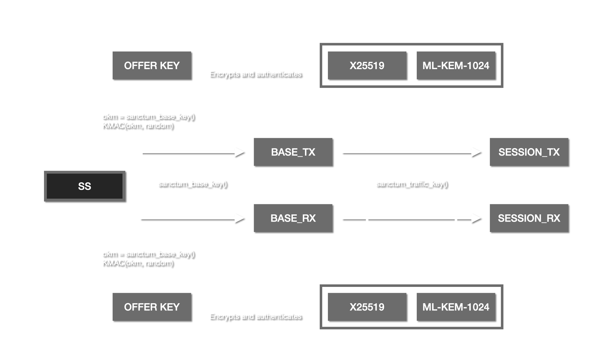

TL;DR: a session key comes from three things combined: a pre-shared symmetric secret, a classical Diffie-Hellman exchange (X25519), and a post-quantum exchange (ML-KEM-1024). Breaking any one of the three on its own isn't enough to recover the traffic key.
Overview
Sanctum is post-quantum secure due to its unique approach to deriving session keys based on a shared symmetrical secret in combination with a hybridized asymmetrical exchange. The asymmetrical exchange combines both classic ECDH (x25519) and the PQ-secure NIST standardized ML-KEM-1024. All three secrets are used to derive strong session keys.

Encryption
Traffic is by default encrypted under AES256-GCM with unique keys in both RX and TX directions using a 96-bit nonce consisting of a 32-bit salt and a 64-bit packet counter. For management traffic unique encryption keys are derived from the shared secret per message. In this case because the keys are freshly derived the nonces used in this construction are fixed as there is no risk for (key, nonce) pair re-use in this specific scenario.
Key exchange
Sanctum uses a strong shared symmetrical secret in combination with two asymmetrical secrets (ECDH and ML-KEM-1024) to derive session keys for both RX and TX directions. Session keys are expired automatically after a given number of packets have been submitted on them (1 << 34), or after 1-hour. The key exchange process looks as follows:
ss = shared symmetrical key, 256-bit, loaded from disk
traffic_base_rx = sanctum_base_key(ss, PURPOSE_RX)
traffic_base_tx = sanctum_base_key(ss, PURPOSE_TX)
sanctum_base_key(key, purpose):
cathedral_flock = flock tunnel belongs too, or 0 if no cathedral in use
cathedral_flock_dst = flock destination tunnels belongs too, or 0 when
talking to a cathedral or no cathedral is in use
if cathedral_flock <= cathedral_flock_dst:
flock_a = cathedral_flock
flock_b = cathedral_flock_dst
else:
flock_a = cathedral_flock_dst
flock_b = cathedral_flock
if purpose == PURPOSE_OFFER:
label = "SANCTUM.OFFER.KDF"
else if purpose == PURPOSE_RX_KEY:
label = "SANCTUM.KEY.TRAFFIC.RX.KDF"
else if purpose == PURPOSE_TX_KEY:
label = "SANCTUM.KEY.TRAFFIC.TX.KDF"
x = len(flock_a) || flock_a || len(flock_b) || flock_b
base_key = KMAC256(key, label, x), 256-bit
return base_key
derive_offer_encryption_key(seed):
x = len(seed) || seed
ss = shared symmetrical secret, 256-bit
key = sanctum_base_key(ss, PURPOSE_OFFER)
wk = KMAC256(key, "SANCTUM.SACRAMENT.KDF", x), 256-bit
return wk
offer_create():
offer.ecdh = X25519-KEYGEN()
offer.kem = ML-KEM-1024-KEYGEN()
offer.now = TIME(WALL_CLOCK), 64-bit
offer.id = PRNG(64-bit), unique sanctum id
offer.salt = PRNG(32-bit), salt for nonce construction
offer.spi = PRNG(32-bit), the spi for this association
offer.random = PRNG(128-bit), random value for key derivation.
return offer
offer_send_pk(offer):
seed = PRNG(512-bit)
dk = derive_offer_encryption_key(seed)
header = 0x53414352414D4E54 || flock_src || flock_dst || offer.spi || seed
data = SANCTUM_OFFER_TYPE_EXCHANGE || offer.now ||
offer.id || offer.spi || offer.salt ||
SANCTUM_OFFER_STATE_KEM_PK_FRAGMENT ||
offer.ecdh.pub || offer.kem.pk || offer.random
encdata = AES256-GCM(dk, nonce=1, aad=header, data)
packet.header = header
packet.data = encdata
send(packet)
offer_recv_pk(offer):
packet = recv()
now = TIME(WALL_CLOCK), 64-bit
if packet.now < (now - 10) || packet.now > (now + 10)
return
ss = shared symmetrical secret, 256-bit
dk = derive_offer_encryption_key(packet.header.seed)
pt = AES256-GCM(dk, nonce=1, aad=packet.header, packet.data)
ecdh_ss = X25519-SCALAR-MULT(pt.ecdh.pub, offer.ecdh.private)
offer.kem.ct, kem_ss = ML-KEM-1024-ENCAP(pt.kem.pk)
if pt.instance < local_id
traffic_key = sanctum_base_key(ss, PURPOSE_RX_KEY)
else
traffic_key = sanctum_base_key(ss, PURPOSE_TX_KEY)
r = offer.random || packet.extra.random
x = len(ecdh_ss) || ecdh_ss || len(kem_ss) || kem_ss ||
len(ecdh.pub) || ecdh.pub || len(pt.ecdh.pub) || pt.ecdh.pub ||
len(r) || r
rx = KMAC256(traffic_key, "SANCTUM.TRAFFIC.KDF", x), 256-bit
return rx
offer_send_ct(offer):
seed = PRNG(512-bit)
dk = derive_offer_encryption_key(seed)
header = 0x53414352414D4E54 || flock_src || flock_dst || offer.spi || seed
data = SANCTUM_OFFER_TYPE_EXCHANGE || offer.now ||
offer.id || offer.spi || offer.salt ||
SANCTUM_OFFER_STATE_KEM_CT_FRAGMENT ||
offer.ecdh.pub || offer.kem.ct || offer.random
encdata = AES256-GCM(dk, nonce=1, aad=header, pt)
packet.header = header
packet.data = encdata
send(packet)
offer_recv_ct(offer):
packet = recv()
now = TIME(WALL_CLOCK), 64-bit
if packet.now < (now - 10) || packet.now > (now + 10)
return
ss = shared symmetrical secret, 256-bit
dk = derive_offer_encryption_key(packet.header.seed)
pt = AES256-GCM(dk, nonce=1, aad=packet.header, packet.data)
ecdh_ss = X25519-SCALAR-MULT(pt.ecdh.pub, offer.ecdh.private)
kem_ss = ML-KEM-1024-DECAP(offer.kem, pt.kem.ct)
if pt.instance < local_id
traffic_key = sanctum_base_key(ss, PURPOSE_TX_KEY)
else
traffic_key = sanctum_base_key(ss, PURPOSE_RX_KEY)
r = offer.random || packet.extra.random
x = len(ecdh_ss) || ecdh_ss || len(kem_ss) || kem_ss ||
len(ecdh.pub) || ecdh.pub || len(pt.ecdh.pub) || pt.ecdh.pub ||
len(r) || r
tx = KMAC256(traffic_key, "SANCTUM.TRAFFIC.KDF", x), 256-bit
return tx
key exchange:
my_offer = offer_create()
peer_offer = offer_create()
offer_send_pk(my_offer)
tx = offer_recv_ct(my_offer)
rx = offer_recv_pk(peer_offer)
offer_send_ct(peer_offer)